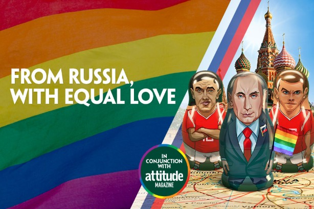
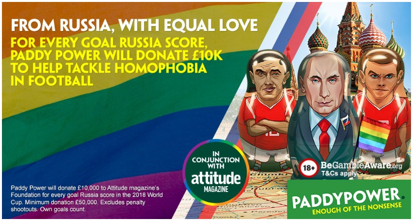

案例发生了什么


面对东道主俄罗斯的 LGBT+ 争议，Paddy Power 承诺俄罗斯队每进一球便向相关公益组织捐款一万英镑，让原本矛盾的人群开始“希望俄罗斯进球”。
与 Attitude Foundation 合作；赛前公布最低捐款；每轮跟随俄罗斯进球更新金额；名人、媒体与社交账号持续扩散；最终捐出 17 万英镑。
MARKETING KNOWLEDGE ROUTER · 营销知识路由器
营销启发卡
把历届经典的记忆点、商业结构和迁移方法放在同一层阅读。 卡片底部按主题连接全站相关案例、经典方法与深度文章。
核心动作
反讽、价值冲突、用足球结果推动平等议题的参与感；“From Russia, With Equal Love”与彩虹套娃视觉。
传播与商业机制
Paddy Power 一贯以冒犯边界的幽默和体育博彩机制著称；把进球变成捐款触发器，符合其语气且形成可持续更新的数字；与 Attitude Foundation 合作；赛前公布最低捐款；每轮跟随俄罗斯进球更新金额；名人、媒体与社交账号持续扩散；最终捐出 17 万英镑。
可复用的方法
赛果触发机制可以把一次主张变成整届赛事的连续剧情，但公益对象和品牌立场必须真实，不能只制造一次挑衅。
适用条件、风险与证据
- 博彩、政治与性少数议题叠加，文化与监管风险极高；品牌必须准备长期行动、受益方治理和安全预案。
- 后续复盘还应补齐发布主体、时间线、真实执行图、媒介范围和结果口径；没有这些证据时，不把行业评价或赛事总热度写成品牌增量。
资料与来源
官方资料与原始来源
市场 / 权益
英国 / 全球舆论
非官方借势
创意打法
社会议题型；赛果触发型；反讽表达型
- PRWeek · 2019Rainbow Russians case study
- Flutter Entertainment · 2018-08-082018 interim results: Rainbow Russians donation total
- The Irish Post · 2018-06-13本页真实案例图片主源
来源按品牌/官方发布、官方账号留存、权威媒体、获奖案例库分层记录；品牌与奖项自报结果不视作独立审计。